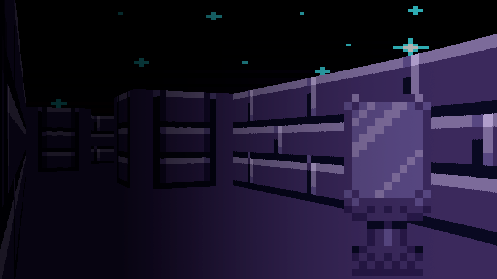

O Projeto visa demonstrar como o modelo de Inteligência Artificial SVM se comporta na classificação de indíviduos criados manualmente. Para isso, foi usado um dataset da Franquia Pokémon, contendo 898 Indivíduos. O Objetivo do Algorítmo é classificar quais dentre esses Pokémon são Comuns, Lendários, Sub-lendários e Míticos.

python / pygame
Wolfeinstein3D Render
Estudo de Biblioteca python / Trigonometria
Este projeto é uma recriação do estilo clássico de renderização 3D usado em Wolfenstein 3D, totalmente feito com Python e Pygame. Ele utiliza Raycasting para simular uma perspectiva 3D a partir de um mapa 2D, com renderização de paredes, céu, chão e objetos (sprites), oferecendo uma base simples para entender como jogos 3D antigos funcionavam internamente.
react / html / css / js
SCX - Sistema de Controle de Exames
Projeto de Conclusão de Curso / Estudo de React e Front-End
O SCX visa atender a crescente necessidade de um sistema integrado entre laboratório, médicos e também incluindo pacientes por meio da fácil criação, gestão, vizualização e integração de exames.